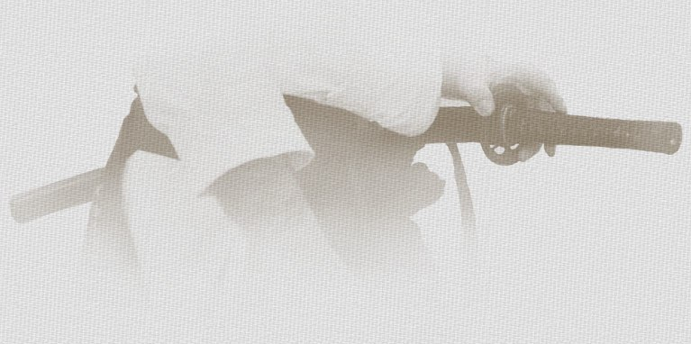

Kiyoikaze Iaido Federation



Iaido
Iaido is the traditional art of drawing, cutting, and re-sheathing the Japanese sword.
Practice is centered on Muso Shinden Ryu, though several additional series are studied.
Muso Shinden Ryu
Shoden (Omori Ryu)
1. Shohato - first draw
2. Sato - left draw
3. Uto - right draw
4. Atarito - smash
5. Inyoshintai - forward and backward
6. Ryuto - leading blade
7. Junto - follow the sword
8. Gyakuto - reversed
9. Seichuto - forcing the sword
10. Koranto - tiger run
11. Kaete Inyoshintai - another way to do #5
12. Batto - draw the sword or quick draw
Chuden (Hasegawa Eishin ryu)
1. Yokogumo - cloud bank
2. Tora Issoku - tiger step
3. Inazuma - lightning
4. Ukigomo - floating cloud
5. Yama Oroshi - wind down from the mountain
6. Iwanami - wave hitting rocks
7. Uroko Gaeshi - dragon turns
8. Nami Gaeshi - wave turns
9. Taki Otoshi - waterfall
10. Nuki Uchi - draw and cut
Okuden (Kugesa)
1. Kasumi - foggy
2. Sunegakoi - block the shin
3. Tosume - narrow door
4. Towaki - beside the door
5. Shiho Giri - cut in 4 directions
6. Tanashita - under the shelf
7. Ryozume - narrow side
8. Torabashiri - tiger run
Okuden (Tachi waza)
1. Yukitsure - go together
2. Turedachi - go together or take you somewhere
3. Somakuri (Gohogiri) - total attack or 5 different cuts
4. Sodome (Hanashiushi) - total block or blast off
5. Shinobu (Yorunotachi) - hiding or sword of the night
6. Yukichigai - passing
7. Sodesurikaeshi (Kennokoto) - turn the sleeve or be smart
8. Moniri (Kakuretsu) - pass the gate
9. Kabesoi (Hitinaka) - beside a wall or among a crowd
10. Uke Nagashi (Yuriminuki) - block & lead
11. Ittomagoi - goodbye
Eishin Ryu
Batto no Kata
1. Junto
2. Tsuigekito - pursue
3. Shato - inclined
4. Shihoto
5. Zantotsuto
Oku no Kata
1. Zenteki Gyakuto
2. Tatekito - several enemies
3. Koteki Gyakuto - enemy in the back
Bangai no Kata
1. Haya Nami
2. Rai Den
3. Jin Rai
4. Shiho Giri
Hosoda Ryu
1. Iwanami - waves hitting rocks
2. Ukifune Gaeshi - floating boat turning back
3. Noarashi Gaeshi - wind in the field turns back
4. Utsusemi - empty (void)
5. Matsukaze - pine wind
6. Zangetsu Hidari - morning moon left
7. Zangetsu Migi - morning moon right
8. Do To Gaeshi - great wave turns back
9. Rai To Gaeshi - lightning turns back
10. Yo To - forcing the blade or active blade
11. In To - passive blade
12. Inazuma Gaeshi - lightning turns back
Keishi Ryu
1. Maegoshi (Asayama Ichidan Ryu) - passing in front
2. Musogaeshi (Shindo Munen Ryu) - emptyness turns
3. Migi No Teki (Kyoshin Miyashi Ryu) - enemy on the right
4. Mawarigake (Tamiya Ryu) - turning attack
5. Shiho (Tatsume Ryu) - 4 directions
Shindo Munen Ryu
1st series, 10 movements
2nd series, 20 movements
Seitei Iai ZNKR
1. Mae - front
2. Ushiro - behind
3. Ukenagashi - block and lead
4. Tsuka Ate - hit with the handle
5. Kesa Giri - directional cut
6. Morote Tsuki - stab with both hands
7. Sampogiri - cut in 3 directions
8. Ganmen Ate - hit the face
9. Soete Tsuki - blade and hand together
10. Shiho Giri - cut in 4 directions
11. So Giri
12. Nuki Uchi
Seitei Iai Iaido
1. Maegiri (Eishin Ryu)
2. Zengogiri ou Mae Atogiri (Mugai Ryu)
3. Kiriage (Shindo Munen Ryu)
4. Shihogiri (Suio Ryu)
5. Kissakigaishi (Hoki Ryu)
Toyama Ryu
1. Mae No Teki - enemy to the front
2. Migi No Teki - enemy to the right
3. Hidari No Teki - enemy to the left
4. Ushiro No Teki - enemy to the rear
5. Chokusen No Teki - enemy close in front
6. Ushiro Mae No Teki - enemies to front & rear
7. Migi, Hidari, Mae No Teki - enemies right, left, front
8. Ittoryodan
Japanese counting
1. Ichi / Ipponme
2. Ni / Nihonme
3. San / Sanhonme
4. Shi / Yohonme
5. Go / Gohonme
6. Roku / Ropponme
7. Shichi / Shichihonme
8. Hachi / Happonme
9. Kyu / Kyuhonme
10. Ju / Jupponme
11. Juichi / Juiponme
12. Juni / Junihonme

Kiyoikaze Iaido Federation - info@kiyoikaze.org - 514 845-2729 (Canada)